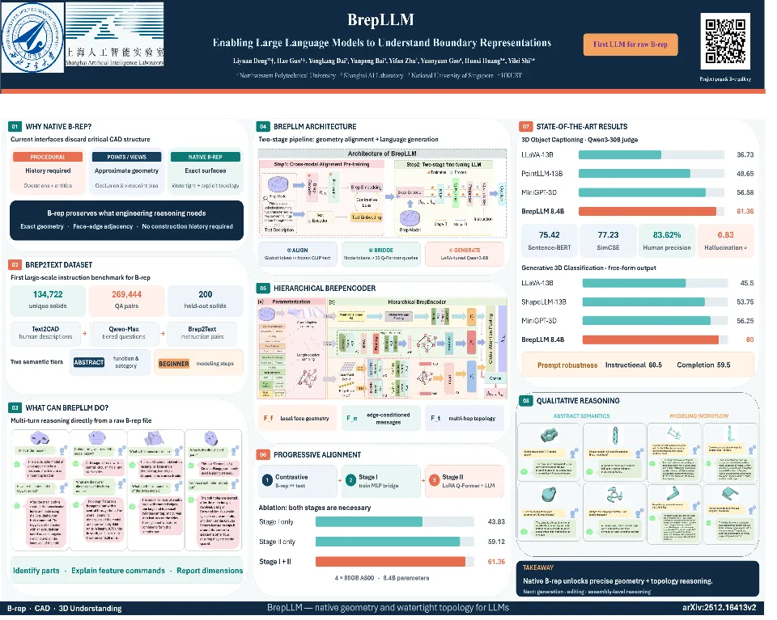

ECCV 2026
BrepLLM: Enabling Large Language Models to Understand Boundary Representations
A multimodal framework that lets language models reason directly over geometric and topological structures in native B-rep CAD models.
I am a Software Engineering undergraduate at Northwestern Polytechnical University. My research focuses on multimodal learning and language models for structured 3D-CAD understanding and generation.
I co-authored BrepLLM at ECCV 2026 and am currently working on a CadQuery-based multimodal agent for CAD generation, understanding, and editing.

ECCV 2026
A multimodal framework that lets language models reason directly over geometric and topological structures in native B-rep CAD models.
An ongoing CadQuery-based multimodal agent project for CAD generation, understanding, and editing. My work covers data construction, SFT format design, fine-tuning, and CAD-kernel verification.
GPA 3.813 / 4.1 · Rank 11 / 270
Built agent workflows for automated document generation and contributed to backend interfaces for a municipal data platform.
Built a visible-light and infrared UAV traffic perception system with YOLOv8-OBB detection and real-time Edge-Cloud-Dashboard visualization.
Developed pest recognition APIs and deployed a YOLO model in a Scrum-built agricultural management system with RAG advice, task workflows and risk forecasting.